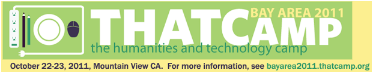

I’ll be at the upcoming Bay Area THATCamp held at Google’s campus in Mountain View on October 22-23. Along with various unconferencey kinds of things, I’ll be giving a 90-minute tutorial on Gephi, including a showcase of the various new features but also demonstrating data creation and import. I’m hoping to have a few D3 examples for folks to post their (smaller) networks on the web, as well as showcase a few non-standard graphs that Gephi is so good for, such as Topic Networks, Literary Genomes, Historical Geographic Networks, Databases as Networks and other exotic sounding uses of network analysis and representation. If anyone wants me to focus on a particular aspect of Gephi’s functionality, just give me a heads-up in advance and I’ll make sure to include it.
I’m also going to demo the various Drupal Spatial work I’ve been doing lately. Anyone who wants to know how to do that can just corner me during the camping and I’ll be happy to walk them through it. Joining me will be Noemi Alvarez, our Humanities GIS Analyst, who if we’re lucky might also be willing to show off her new Text Density maps.